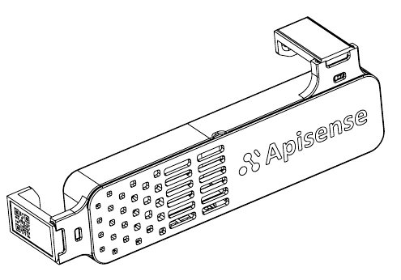
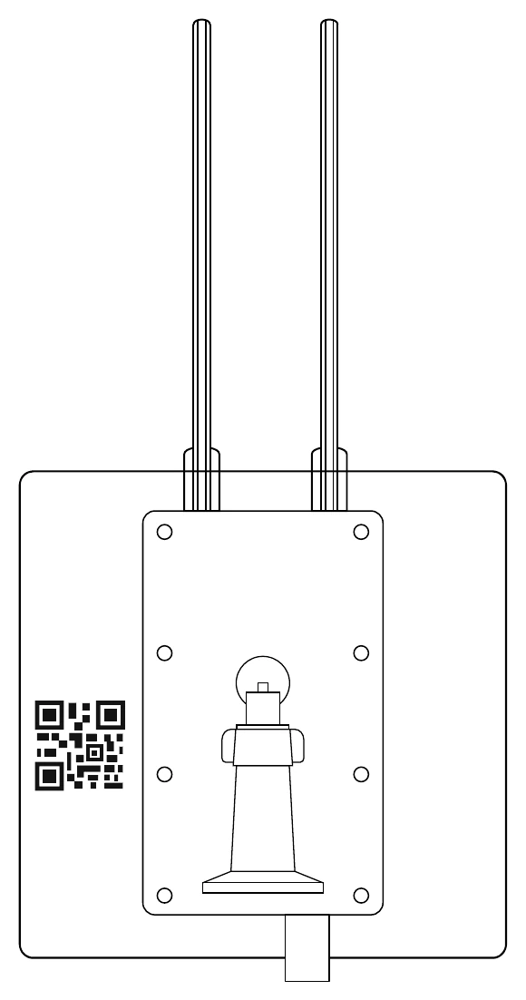
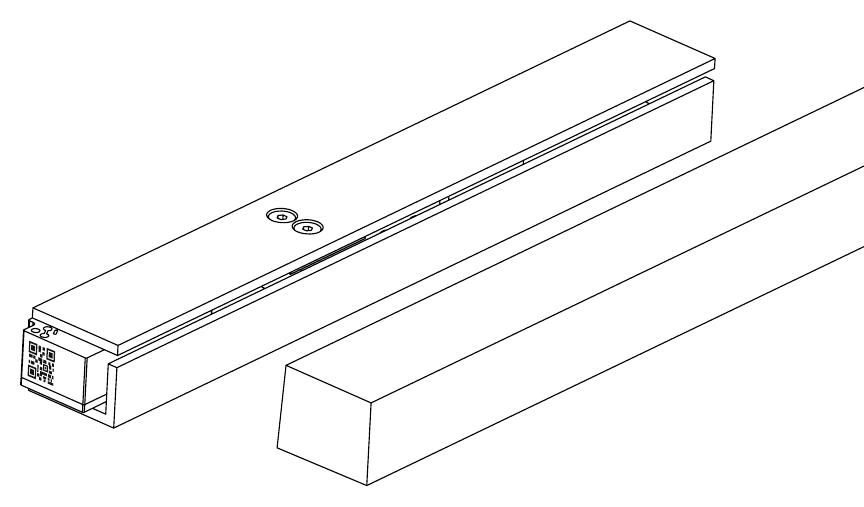
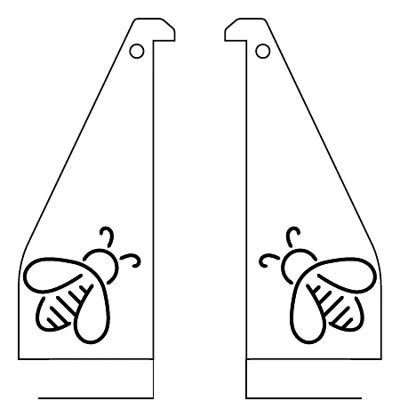

ZestawThe kit
Pięć elementów, jeden ul startowyFive elements, one starter hive
Jeden Hub obsługuje całą pasiekę. Waga trafia pod pierwszy ul, a każdy kolejny ul potrzebuje własnego VitalSensora i Taga. A single Hub serves the whole apiary. The Scale goes under the first hive; every additional hive needs its own VitalSensor and Tag.

3 × VitalSensor

3 × Tag

1 × Hub

1 × Scale

1 × Beeframe Holder
Krok 01Step 01
Pobierz aplikacjęDownload the app
Cały zestaw konfigurujesz z telefonu. Zeskanuj kod QR aparatem albo wyszukaj Apisense Pro AI w App Store lub Google Play. The whole kit is configured from your phone. Scan the QR code with your camera or search for Apisense Pro AI in the App Store or Google Play.
- iOSGórny kod QR — App StoreTop QR code — App Store
- AndroidDolny kod QR — Google PlayBottom QR code — Google Play

Krok 02Step 02
Stwórz kontoCreate an account
Podaj nazwę użytkownika, adres e-mail i numer telefonu, a następnie naciśnij Next. Możesz też zarejestrować się kontem Google lub Apple. Enter a username, e-mail address and mobile phone, then tap Next. You can also sign up with your Google or Apple account.
- UsernameNazwa widoczna w aplikacjiName shown inside the app
- EmailSłuży do logowania i powiadomieńUsed for login and notifications
- PhoneNumer kontaktowy do kontaContact number for the account

Krok 03 · 03.1 – 03.2Step 03 · 03.1 – 03.2
Dodaj pasiekęAdd apiary
Pasieka to miejsce, w którym stoją ule i jeden Hub. Zaczynasz od nadania jej nazwy. An apiary is the place where your hives and one Hub live. Start by giving it a name.
- 03.1Na ekranie powitalnym naciśnij Add apiary.On the welcome screen tap Add apiary.
- 03.2Wpisz nazwę pasieki i jej skrót (maks. 3 znaki), a potem dotknij ikony skanera przy polu Hub.Enter the apiary name and its abbreviation (max. 3 characters), then tap the scanner icon next to the Hub field.

Krok 03 · 03.3Step 03 · 03.3
Zeskanuj kod QR HubaScan the Hub QR code
Kod QR znajduje się na obudowie Huba, obok modułu montażowego. Ustaw go w ramce skanera — aplikacja odczyta go sama. The QR code sits on the Hub housing, next to the mounting module. Line it up inside the scanner frame — the app reads it automatically.
Wskazówka: jeśli kod się nie skanuje, przetrzyj go i zapewnij równomierne światło — bez odblasku. Tip: if the code will not scan, wipe it clean and use even light — avoid glare.

Krok 03 · 03.4 – 03.6Step 03 · 03.4 – 03.6
Pasieka jest gotowaYour apiary is ready
Po zeskanowaniu kodu aplikacja uzupełnia dane Huba za Ciebie — nic nie przepisujesz ręcznie. After the scan the app fills in the Hub details for you — nothing has to be typed by hand.
- 03.4Skaner odczytuje kod QR z Huba.The scanner reads the QR code from the Hub.
- 03.5Pola Hub i Verification Code wypełniają się automatycznie — zatwierdź formularz.The Hub and Verification Code fields fill in automatically — confirm the form.
- 03.6Pasieka pojawia się na ekranie głównym razem z pogodą.The apiary appears on the home screen along with the weather.

Krok 04 · 04.1 – 04.3Step 04 · 04.1 – 04.3
Dodaj ul: waga i VitalSensor 1Add hive: Scale & VitalSensor 1
Pierwszy ul dostaje komplet: wagę i VitalSensor. Oba urządzenia dodajesz w jednym formularzu. The first hive gets the full set: a Scale and a VitalSensor. You add both devices in a single form.
- 04.1Na ekranie głównym otwórz swoją pasiekę.Open your apiary from the home screen.
- 04.2Naciśnij Add beehive.Tap Add beehive.
- 04.3Dotknij ikony skanera przy polu Scale.Tap the scanner icon next to the Scale field.

Krok 04 · 04.5 – 04.6Step 04 · 04.5 – 04.6
Waga wpisana do ulaScale linked to the hive
Numer wagi i kod weryfikacyjny wpisują się same. Teraz przejdź do drugiej pozycji formularza. The Scale ID and verification code fill in on their own. Now move on to the second field of the form.
- 04.5Skaner odczytuje kod QR wagi.The scanner reads the Scale QR code.
- 04.6Pola Scale i Verification Code są uzupełnione — dotknij skanera przy polu VitalSensor.The Scale and Verification Code fields are filled — tap the scanner next to the VitalSensor field.

Krok 04 · 04.8 – 04.10Step 04 · 04.8 – 04.10
Pierwszy ul jest aktywnyThe first hive is live
Po zapisaniu formularza ekran główny pokazuje aktywny ul i status rodziny. Once you save the form, the home screen shows the active hive and the colony status.
- 04.8Skaner odczytuje kod QR VitalSensora.The scanner reads the VitalSensor QR code.
- 04.9Formularz jest kompletny — naciśnij Save.The form is complete — tap Save.
- 04.10Ekran główny: Active beehives 1/1 oraz Healthy family.Home screen: Active beehives 1/1 and Healthy family.

Krok 05 · 05.1 – 05.3Step 05 · 05.1 – 05.3
Dodaj kolejny ulAdd another hive
Kolejne ule dodajesz z samym VitalSensorem — waga zostaje pod pierwszym ulem. Pole Scale zostaw puste. Further hives are added with a VitalSensor only — the Scale stays under the first hive. Leave the Scale field empty.
- 05.1Otwórz pasiekę z ekranu głównego.Open the apiary from the home screen.
- 05.2Naciśnij + i wybierz Beehive.Tap + and choose Beehive.
- 05.3Dotknij ikony skanera przy polu VitalSensor.Tap the scanner icon next to the VitalSensor field.

Krok 05 · 05.5 – 05.7Step 05 · 05.5 – 05.7
Kolejny ul w pasieceAnother hive in the apiary
Formularz zapisuje się tak samo jak przy pierwszym ulu — bez pola Scale. The form saves exactly like the first hive — just without the Scale field.
- 05.5Skaner odczytuje kod QR czujnika.The scanner reads the sensor QR code.
- 05.6Pola VitalSensor i Verification Code są gotowe — naciśnij Save.The VitalSensor and Verification Code fields are ready — tap Save.
- 05.7Ekran główny pokazuje kolejny aktywny ul.The home screen shows the next active hive.